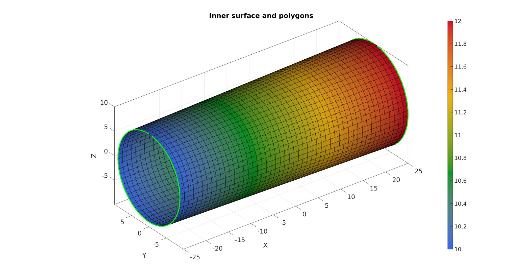
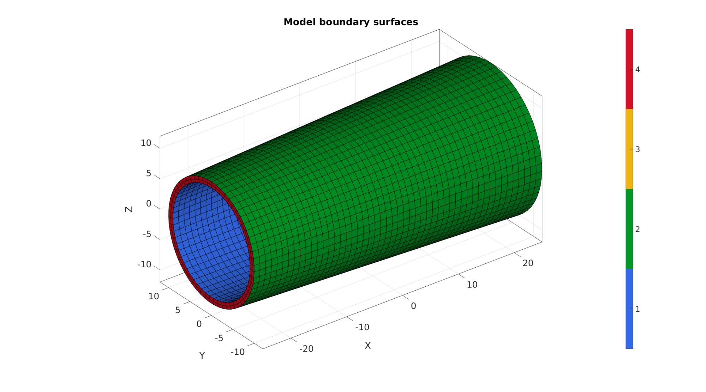
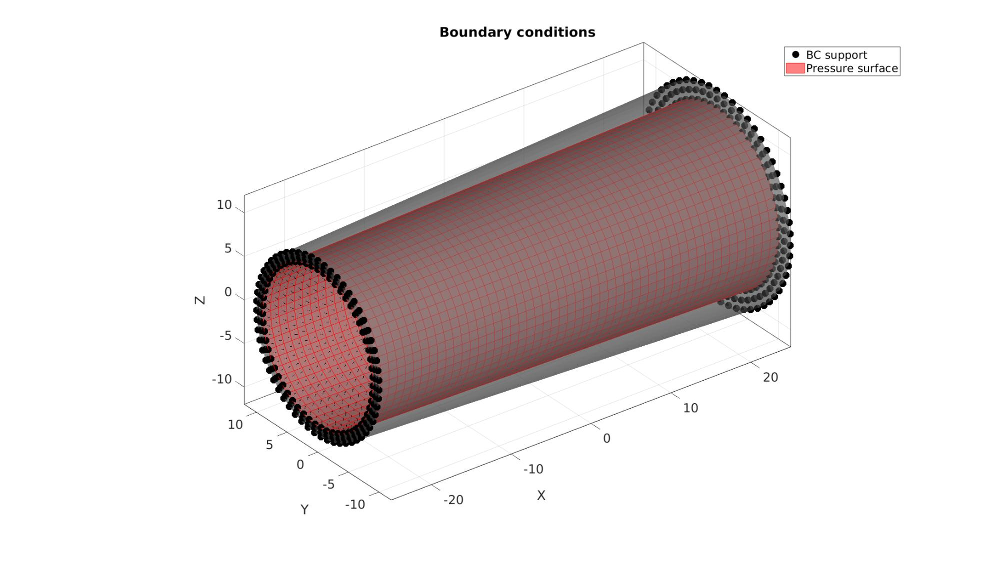
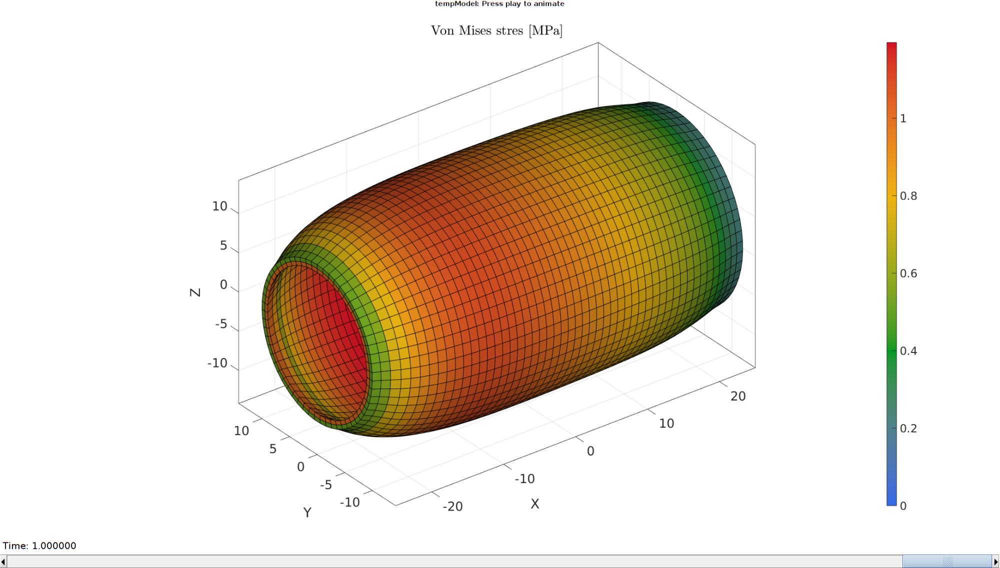

DEMO_febio_0019_vessel_pressure_inflate
Below is a demonstration for:
- Building geometry for a cylindrical vessel with tetrahedral elements
- Defining the boundary conditions
- Coding the febio structure
- Running the model
- Importing and visualizing the displacement results
Contents
Keywords
- febio_spec version 4.0
- febio, FEBio
- vessel, cylinder
- prescribed pressure
- tetrahedral elements, tet4
- tube, cylindrical
- static, solid
- hyperelastic, Ogden
- displacement logfile
- stress logfile
clear; close all; clc;
Plot settings
fontSize=20; faceAlpha1=0.8; markerSize=40; markerSize2=20; lineWidth=3;
Control parameters
% Path names defaultFolder = fileparts(fileparts(mfilename('fullpath'))); savePath=fullfile(defaultFolder,'data','temp'); % Defining file names febioFebFileNamePart='tempModel'; febioFebFileName=fullfile(savePath,[febioFebFileNamePart,'.feb']); %FEB file name febioLogFileName=[febioFebFileNamePart,'.txt']; %FEBio log file name febioLogFileName_disp=[febioFebFileNamePart,'_disp_out.txt']; %Log file name for exporting displacement febioLogFileName_stress_prin=[febioFebFileNamePart,'_stress_prin_out.txt']; %Log file name for exporting principal stress %Specifying geometry parameters pointSpacing=1; radiusInner1=9; radiusInner2=10; radiusOuter1=10; radiusOuter2=12; vesselLength=50; %Load appliedPressure=0.1; %MPa %Material parameter set c1=1; %Shear-modulus-like parameter m1=2; %Material parameter setting degree of non-linearity k_factor=1e2; %Bulk modulus factor k=c1*k_factor; %Bulk modulus % FEA control settings numTimeSteps=10; %Number of time steps desired max_refs=25; %Max reforms max_ups=0; %Set to zero to use full-Newton iterations opt_iter=6; %Optimum number of iterations max_retries=5; %Maximum number of retires dtmin=(1/numTimeSteps)/100; %Minimum time step size dtmax=1/numTimeSteps; %Maximum time step size runMode='external';% 'internal' or 'external'
Creating model boundary polygons
nRad=round((2*pi*mean([radiusInner1 radiusInner2]))/pointSpacing); %Number of radial steps t=linspace(0,2*pi,nRad)'; %Angles t=t(1:end-1); %take away last which equals start v1_Inner=[-(vesselLength/2)*ones(size(t)) radiusInner1*sin(t) radiusInner1*cos(t)]; %Circular coordinates t=linspace(0,2*pi,nRad)'; %Angles t=t(1:end-1); %take away last which equals start v2_Inner=[(vesselLength/2)*ones(size(t)) radiusInner2*sin(t) radiusInner2*cos(t)]; %Circular coordinates
Creating model boundary surfaces
% controlStructLoft.numSteps=17; controlStructLoft.closeLoopOpt=1; controlStructLoft.patchType='quad'; %Meshing outer surface [F1,V1]=polyLoftLinear(v1_Inner,v2_Inner,controlStructLoft); F1=fliplr(F1); %Invert orientation
outerRadii=V1(:,1); %x outerRadii=outerRadii-min(outerRadii(:)); %[0 - ...] outerRadii=outerRadii./max(outerRadii(:)); %[0 - 1] outerRadii=radiusOuter1+(outerRadii.*(radiusOuter2-radiusOuter1)); %[0 - 1] innerRadii=V1(:,1); %x innerRadii=innerRadii-min(innerRadii(:)); %[0 - ...] innerRadii=innerRadii./max(innerRadii(:)); %[0 - 1] innerRadii=radiusInner1+(innerRadii.*(radiusInner2-radiusInner1)); %[0 - 1] wallThickness=outerRadii-innerRadii;
Plotting model boundary polygons
cFigure; hold on; title('Inner surface and polygons','FontSize',fontSize); gpatch(F1,V1,outerRadii); plotV(v1_Inner,'g.-','LineWidth',3); plotV(v2_Inner,'g.-','LineWidth',3); axisGeom(gca,fontSize); camlight headlight; colormap gjet; colorbar; gdrawnow;
numSteps=ceil(max(wallThickness)./pointSpacing);
[E,V,Fp1,Fp2]=patchThick(F1,V1,1,wallThickness,numSteps);
[F,~,C_type]=element2patch(E,[],'hex8');
indBoundary=tesBoundary(F);
Fb=F(indBoundary,:);
Cb=C_type(indBoundary,:);
Plotting model boundary surfaces
cFigure; hold on; title('Model boundary surfaces','FontSize',fontSize); gpatch(Fb,V,Cb); axisGeom(gca,fontSize); camlight headlight; colormap gjet; icolorbar; drawnow;
Defining the boundary conditions
The visualization of the model boundary shows colors for each side of the cube. These labels can be used to define boundary conditions.
%Define supported node set bcSupportList=unique(Fb(ismember(Cb,[3 4]),:)); %Node set part of selected face F_pressure=Fb(Cb==1,:);
Visualizing boundary conditions. Markers plotted on the semi-transparent model denote the nodes in the various boundary condition lists.
hf=cFigure; title('Boundary conditions','FontSize',fontSize); xlabel('X','FontSize',fontSize); ylabel('Y','FontSize',fontSize); zlabel('Z','FontSize',fontSize); hold on; gpatch(Fb,V,'kw','none',0.5); hl(1)=plotV(V(bcSupportList,:),'k.','MarkerSize',markerSize); hl(2)=gpatch(F_pressure,V,'rw','r',1); patchNormPlot(F_pressure,V); legend(hl,{'BC support','Pressure surface'}); axisGeom(gca,fontSize); camlight headlight; drawnow;
Defining the FEBio input structure
See also febioStructTemplate and febioStruct2xml and the FEBio user manual.
%Get a template with default settings [febio_spec]=febioStructTemplate; %febio_spec version febio_spec.ATTR.version='4.0'; %Module section febio_spec.Module.ATTR.type='solid'; %Control section febio_spec.Control.analysis='STATIC'; febio_spec.Control.time_steps=numTimeSteps; febio_spec.Control.step_size=1/numTimeSteps; febio_spec.Control.solver.max_refs=max_refs; febio_spec.Control.solver.qn_method.max_ups=max_ups; febio_spec.Control.time_stepper.dtmin=dtmin; febio_spec.Control.time_stepper.dtmax=dtmax; febio_spec.Control.time_stepper.max_retries=max_retries; febio_spec.Control.time_stepper.opt_iter=opt_iter; %Material section materialName1='Material1'; febio_spec.Material.material{1}.ATTR.name=materialName1; febio_spec.Material.material{1}.ATTR.type='Ogden'; febio_spec.Material.material{1}.ATTR.id=1; febio_spec.Material.material{1}.c1=c1; febio_spec.Material.material{1}.m1=m1; febio_spec.Material.material{1}.c2=c1; febio_spec.Material.material{1}.m2=-m1; febio_spec.Material.material{1}.k=k; %Mesh section % -> Nodes febio_spec.Mesh.Nodes{1}.ATTR.name='nodeSet_all'; %The node set name febio_spec.Mesh.Nodes{1}.node.ATTR.id=(1:size(V,1))'; %The node id's febio_spec.Mesh.Nodes{1}.node.VAL=V; %The nodel coordinates % -> Elements partName1='Part1'; febio_spec.Mesh.Elements{1}.ATTR.name=partName1; %Name of this part febio_spec.Mesh.Elements{1}.ATTR.type='hex8'; %Element type febio_spec.Mesh.Elements{1}.elem.ATTR.id=(1:1:size(E,1))'; %Element id's febio_spec.Mesh.Elements{1}.elem.VAL=E; %The element matrix % -> Surfaces surfaceName1='LoadedSurface'; febio_spec.Mesh.Surface{1}.ATTR.name=surfaceName1; febio_spec.Mesh.Surface{1}.quad4.ATTR.id=(1:1:size(F_pressure,1))'; febio_spec.Mesh.Surface{1}.quad4.VAL=F_pressure; % -> NodeSets nodeSetName1='bcSupportList'; febio_spec.Mesh.NodeSet{1}.ATTR.name=nodeSetName1; febio_spec.Mesh.NodeSet{1}.VAL=mrow(bcSupportList); %MeshDomains section febio_spec.MeshDomains.SolidDomain.ATTR.name=partName1; febio_spec.MeshDomains.SolidDomain.ATTR.mat=materialName1; %Boundary condition section % -> Fix boundary conditions febio_spec.Boundary.bc{1}.ATTR.name='zero_displacement_xyz'; febio_spec.Boundary.bc{1}.ATTR.type='zero displacement'; febio_spec.Boundary.bc{1}.ATTR.node_set=nodeSetName1; febio_spec.Boundary.bc{1}.x_dof=1; febio_spec.Boundary.bc{1}.y_dof=1; febio_spec.Boundary.bc{1}.z_dof=1; %Loads section % -> Surface load febio_spec.Loads.surface_load{1}.ATTR.type='pressure'; febio_spec.Loads.surface_load{1}.ATTR.surface=surfaceName1; febio_spec.Loads.surface_load{1}.pressure.ATTR.lc=1; febio_spec.Loads.surface_load{1}.pressure.VAL=appliedPressure; febio_spec.Loads.surface_load{1}.symmetric_stiffness=1; %LoadData section % -> load_controller febio_spec.LoadData.load_controller{1}.ATTR.name='LC_1'; febio_spec.LoadData.load_controller{1}.ATTR.id=1; febio_spec.LoadData.load_controller{1}.ATTR.type='loadcurve'; febio_spec.LoadData.load_controller{1}.interpolate='LINEAR'; %febio_spec.LoadData.load_controller{1}.extend='CONSTANT'; febio_spec.LoadData.load_controller{1}.points.pt.VAL=[0 0; 1 1]; %Output section % -> log file febio_spec.Output.logfile.ATTR.file=febioLogFileName; febio_spec.Output.logfile.node_data{1}.ATTR.file=febioLogFileName_disp; febio_spec.Output.logfile.node_data{1}.ATTR.data='ux;uy;uz'; febio_spec.Output.logfile.node_data{1}.ATTR.delim=','; febio_spec.Output.logfile.element_data{1}.ATTR.file=febioLogFileName_stress_prin; febio_spec.Output.logfile.element_data{1}.ATTR.data='s1;s2;s3'; febio_spec.Output.logfile.element_data{1}.ATTR.delim=','; febio_spec.Output.plotfile.compression=0;
Quick viewing of the FEBio input file structure
The febView function can be used to view the xml structure in a MATLAB figure window.
febView(febio_spec); %Viewing the febio file
Exporting the FEBio input file
Exporting the febio_spec structure to an FEBio input file is done using the febioStruct2xml function.
febioStruct2xml(febio_spec,febioFebFileName); %Exporting to file and domNode %system(['gedit ',febioFebFileName,' &']);
Running the FEBio analysis
To run the analysis defined by the created FEBio input file the runMonitorFEBio function is used. The input for this function is a structure defining job settings e.g. the FEBio input file name. The optional output runFlag informs the user if the analysis was run succesfully.
febioAnalysis.run_filename=febioFebFileName; %The input file name febioAnalysis.run_logname=febioLogFileName; %The name for the log file febioAnalysis.disp_on=1; %Display information on the command window febioAnalysis.runMode=runMode; febioAnalysis.maxLogCheckTime=10; %Max log file checking time [runFlag]=runMonitorFEBio(febioAnalysis);%START FEBio NOW!!!!!!!!
%%%%%%%%%%%%%%%%%%%%%%%%%%%%%%%%%%%%%%%%%%%%%%%%%%%%%%%%%%%%%%%%%%%%%%%%%%%
--------> RUNNING/MONITORING FEBIO JOB <-------- 24-Jul-2023 10:40:34
FEBio path: /home/kevin/FEBioStudio/bin/febio4
# Attempt removal of existing log files 24-Jul-2023 10:40:34
* Removal succesful 24-Jul-2023 10:40:34
# Attempt removal of existing .xplt files 24-Jul-2023 10:40:34
* Removal succesful 24-Jul-2023 10:40:34
# Starting FEBio... 24-Jul-2023 10:40:34
Max. total analysis time is: Inf s
* Waiting for log file creation 24-Jul-2023 10:40:34
Max. wait time: 10 s
* Log file found. 24-Jul-2023 10:40:34
# Parsing log file... 24-Jul-2023 10:40:34
number of iterations : 4 24-Jul-2023 10:40:35
number of reformations : 4 24-Jul-2023 10:40:35
------- converged at time : 0.1 24-Jul-2023 10:40:35
number of iterations : 4 24-Jul-2023 10:40:36
number of reformations : 4 24-Jul-2023 10:40:36
------- converged at time : 0.2 24-Jul-2023 10:40:36
number of iterations : 4 24-Jul-2023 10:40:36
number of reformations : 4 24-Jul-2023 10:40:36
------- converged at time : 0.3 24-Jul-2023 10:40:36
number of iterations : 4 24-Jul-2023 10:40:38
number of reformations : 4 24-Jul-2023 10:40:38
------- converged at time : 0.4 24-Jul-2023 10:40:38
number of iterations : 4 24-Jul-2023 10:40:39
number of reformations : 4 24-Jul-2023 10:40:39
------- converged at time : 0.5 24-Jul-2023 10:40:39
number of iterations : 4 24-Jul-2023 10:40:39
number of reformations : 4 24-Jul-2023 10:40:39
------- converged at time : 0.6 24-Jul-2023 10:40:39
number of iterations : 4 24-Jul-2023 10:40:40
number of reformations : 4 24-Jul-2023 10:40:40
------- converged at time : 0.7 24-Jul-2023 10:40:40
number of iterations : 4 24-Jul-2023 10:40:40
number of reformations : 4 24-Jul-2023 10:40:40
------- converged at time : 0.8 24-Jul-2023 10:40:40
number of iterations : 4 24-Jul-2023 10:40:41
number of reformations : 4 24-Jul-2023 10:40:41
------- converged at time : 0.9 24-Jul-2023 10:40:41
number of iterations : 4 24-Jul-2023 10:40:41
number of reformations : 4 24-Jul-2023 10:40:41
------- converged at time : 1 24-Jul-2023 10:40:41
Elapsed time : 0:00:07 24-Jul-2023 10:40:41
N O R M A L T E R M I N A T I O N
# Done 24-Jul-2023 10:40:41
%%%%%%%%%%%%%%%%%%%%%%%%%%%%%%%%%%%%%%%%%%%%%%%%%%%%%%%%%%%%%%%%%%%%%%%%%%%
Import FEBio results
if runFlag==1 %i.e. a succesful run
Importing nodal displacements from a log file
dataStruct=importFEBio_logfile(fullfile(savePath,febioLogFileName_disp),0,1);
%Access data
N_disp_mat=dataStruct.data; %Displacement
timeVec=dataStruct.time; %Time
%Create deformed coordinate set
V_DEF=N_disp_mat+repmat(V,[1 1 size(N_disp_mat,3)]);
Importing element principal stresses from a log file
dataStruct=importFEBio_logfile(fullfile(savePath,febioLogFileName_stress_prin),0,1);
%Access data
E_stress_prin_mat=dataStruct.data;
S1_mat=E_stress_prin_mat(:,1,:);
S2_mat=E_stress_prin_mat(:,2,:);
S3_mat=E_stress_prin_mat(:,3,:);
S_vm = sqrt(((S1_mat-S2_mat).^2+(S2_mat-S3_mat).^2+(S3_mat-S1_mat).^2)./2);
Plotting the simulated results using anim8 to visualize and animate deformations
[~,CF_S_vm,~]=element2patch(E,S_vm(:,:,end),'hex8'); Cb_S_vm=CF_S_vm(indBoundary,:); % Create basic view and store graphics handle to initiate animation hf=cFigure; %Open figure gtitle([febioFebFileNamePart,': Press play to animate']); title('Von Mises stres [MPa]','Interpreter','Latex') hp=gpatch(Fb,V_DEF(:,:,end),Cb_S_vm,'k',1); %Add graphics object to animate axisGeom(gca,fontSize); colormap(gjet(250)); colorbar; caxis([0 max(S_vm(:))]); axis(axisLim(V_DEF)); %Set axis limits statically camlight headlight; % Set up animation features animStruct.Time=timeVec; %The time vector for qt=1:1:size(N_disp_mat,3) %Loop over time increments [~,CF_S_vm,~]=element2patch(E,S_vm(:,:,qt),'hex8'); Cb_S_vm=CF_S_vm(indBoundary,:); %Set entries in animation structure animStruct.Handles{qt}=[hp hp]; %Handles of objects to animate animStruct.Props{qt}={'Vertices','CData'}; %Properties of objects to animate animStruct.Set{qt}={V_DEF(:,:,qt),Cb_S_vm}; %Property values for to set in order to animate end anim8(hf,animStruct); %Initiate animation feature drawnow;
end

GIBBON www.gibboncode.org
Kevin Mattheus Moerman, gibbon.toolbox@gmail.com
GIBBON footer text
License: https://github.com/gibbonCode/GIBBON/blob/master/LICENSE
GIBBON: The Geometry and Image-based Bioengineering add-On. A toolbox for image segmentation, image-based modeling, meshing, and finite element analysis.
Copyright (C) 2006-2023 Kevin Mattheus Moerman and the GIBBON contributors
This program is free software: you can redistribute it and/or modify it under the terms of the GNU General Public License as published by the Free Software Foundation, either version 3 of the License, or (at your option) any later version.
This program is distributed in the hope that it will be useful, but WITHOUT ANY WARRANTY; without even the implied warranty of MERCHANTABILITY or FITNESS FOR A PARTICULAR PURPOSE. See the GNU General Public License for more details.
You should have received a copy of the GNU General Public License along with this program. If not, see http://www.gnu.org/licenses/.